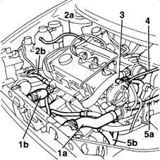
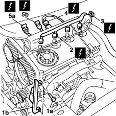
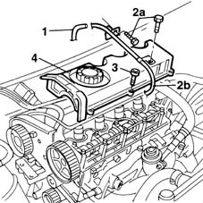
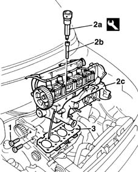
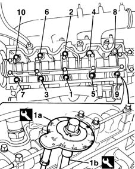

1016C11 single cylinder head-r r gasket for versions with air conditioner
- Path
- Procedures > 10 ENGINE UNIT > 1016 CYLINDER HEAD/S > 1016C cylinder head - remove + re-fit > 1016C11 single cylinder head-r r gasket for versions with air conditioner
- Kind
- repair procedure (removal / refitting; the operation number is the code)
- Applies to
- engines: 1.9 JTD 8V; all production periods
- Interactive page
- https://sloeber94.github.io/elrnDB-fMltpl/en/#/2891356
Applies to: engines: 1.9 JTD 8V; all production periods
 Removing
Removing
 Refitting
Refitting4450B10 Front WHEEL (one) - R.R.
7055B42 Additional FRONT WHEEL ARCH (one), left or right - R.R.
1092G10 single engine belt r r
1092A12 crankshaft pulley - r+r for versions with air conditioner
1032D12 timing system protective cover(s) - r + r
1016A10 sound-proofing cover - r + r
1008C10 power unit upper reaction link r r
1008C14 engine link bracket - r r
1072C44 exhaust manifold heat shield on bulkhead - r+r
1076B50 exhaust pipe attachment to engine - r + r
1080C54 pipe carrying exhaust gas from e.g.r. valve to inlet manifold - r + r
- 1064A10 turbo charger - r + r
1048A10 AIR CLEANER FILTERING ELEMENT - REPLACE
1080D34 engine oil vapour separator - r + r
1060F50 fuel return manifold - r r
1060F36 lines to injectors - r r
1. Undo radiator coolant inlet and outlet hoses (1a) and (1b) from the cylinder head.
2. Disconnect hoses (2a) and (2b) connected to the expansion tank from the rigid pipes on the cylinder head.
3. Disconnect the pipe carrying oil vapour to the separator from the cam cover.
4. Disconnect the brake servo pipe from the vacuum pump.
5. Disconnect both hoses (5a) and (5b) carrying water to and from the heater from the rigid pipe and from the thermostat.

Applies to: engines: 1.9 JTD 8V; all production periods
1. Unscrew retaining bolts (1a) and remove rear timing belt guard (1b).
2. Disconnect the electrical connections from the injectors.
 | Name | Connector |
|---|---|---|
2 | Injector |
3. Disconnect the coolant temperature sensor electrical connection from the thermostat.
| Name | Connector |
|---|---|---|
3 | Engine coolant temperature sensor |
4. Disconnect the electrical connection from the fuel pressure sensor.
| Name | Connector |
|---|---|---|
4 | Fuel pressure sensor |
5. Disconnect the electrical connection of turbo boost pressure sensor (5a) and the connection of glow plug preheating control unit (5b).
| Name | Connector |
|---|---|---|
5a | Turbocharging sensor |
| Name | Connector |
|---|---|---|
5b | Plug preheating control unit |

Applies to: engines: 1.9 JTD 8V; all production periods
1. Disconnect both press-fitted hoses from the ends of the rigid vacuum pipe.
2. Unscrew retaining bolts (2a) and remove pipe (2b).
3. Unscrew the retaining bolts.
4. Remove the cam cover.
Recover the underlying gasket.

Applies to: engines: 1.9 JTD 8V; all production periods
1. Unscrew the bolts securing the intake manifold to the pressure pump mount.
2. Use wrench (2a) to unscrew bolts (2b) securing the cylinder head to the crankcase.
3. Recover the underlying gasket.
 | Name | Country |
|---|---|---|
2a | Hexagonal splined wrench | 1.852.154.000 |

Applies to: engines: 1.9 JTD 8V; all production periods
Refitting
RemovingFit a new cylinder head gasket to the cylinder block/crankcase, taking care that it is the same thickness as the old one.
ASTADUR type cylinder head gaskets are fitted.
The material from which these gaskets are made undergoes a polymerisation process during the operation of the engine so that they become considerably harder during usage.
To ensure the polymerisation process takes place, keep the gasket sealed in its plastic bag and do not take out until ready to fit. Do not lubricate the gasket or contaminate with oil.
Position the cylinder head on the cylinder block/crankcase.
1. Tighten the bolts securing the cylinder head to the crankcase to the recommended torque following the order shown in the figure. Use tools (1a) and (1b) for angular tightening.
 | Fastening | Component | Ø | Value (daNm) |
|---|---|---|---|---|
- | Bolt | CYLINDER HEAD | M12 | 6.5 +90° + 90° +90° |
| Name | Country |
|---|---|---|
1a | Hexagonal splined wrench | 1.852.154.000 |
| Name | Country |
|---|---|---|
1b | Protractor | 1.860.942.000 |

Applies to: engines: 1.9 JTD 8V; all production periods
Tighten the bolts securing the intake manifold to the pressure pump mount to torque.
| Fastening | Component | Ø | Value (daNm) |
|---|---|---|---|---|
- | Nut | INLET MANIFOLD | M8 | 3.5 |
| Fastening | Component | Ø | Value (daNm) |
|---|---|---|---|---|
- | Bolt | INLET MANIFOLD | M8 | 2.5 |
Fit a new gasket to the cam cover.
Fit the cam cover and tighten the bolts to torque.
| Fastening | Component | Ø | Value (daNm) |
|---|---|---|---|---|
- | Bolt | CAM COVER | M6 | 0.9 |
Connect the engine oil vapour pipe to the cam cover.
Fit the rigid vacuum pipe.
Connect both rubber hoses to the ends of the rigid vacuum pipe.
Connect the electrical connections disconnected previously.
| Name | Connector |
|---|---|---|
- | Turbocharging sensor |
| Name | Connector |
|---|---|---|
- | Plug preheating control unit |
| Name | Connector |
|---|---|---|
- | Injector |
| Name | Connector |
|---|---|---|
- | Engine coolant temperature sensor |
| Name | Connector |
|---|---|---|
- | Fuel pressure sensor |
Tighten the rear timing belt guard bolts.
Use new collars to secure the following hoses in place.
Use new collars to connect the radiator coolant inlet and outlet hoses to the cylinder head.
Use new collars to connect the expansion tank connection hoses to the rigid pipes on the cylinder head.
Connect the pipes carrying oil vapour to the separator to the cam cover.
Connect the brake servo pipe to the vacuum pump.
Use new collars to connect both radiator inlet and outlet hoses to the rigid pipe and thermostat.
1060F36 lines to injectors - r r
1060F50 fuel return manifold - r r
1080D34 engine oil vapour separator - r + r
1048A10 AIR CLEANER FILTERING ELEMENT - REPLACE
- 1064A10 turbo charger - r + r
1080C54 pipe carrying exhaust gas from e.g.r. valve to inlet manifold - r + r
1076B50 exhaust pipe attachment to engine - r + r
1072C44 exhaust manifold heat shield on bulkhead - r+r
1008C14 engine link bracket - r r
1008C10 power unit upper reaction link r r
1016A10 sound-proofing cover - r + r
1032D12 timing system protective cover(s) - r + r
1092A12 crankshaft pulley - r+r for versions with air conditioner
1092G10 single engine belt r r
7055B42 Additional FRONT WHEEL ARCH (one), left or right - R.R.
Topics linked from this page (22)
- 1008C10 power unit upper reaction link r r
- 1008C14 engine link bracket - r r
- 1016A10 sound-proofing cover - r + r
- 1032B14 toothed timing belt - r + r for timing adjustment or replacement versions with air conditioner
- 1032D12 timing system protective cover(s) - r + r
- 1048A10 AIR CLEANER FILTERING ELEMENT - REPLACE
- 1060F36 lines to injectors - r r
- 1060F50 fuel return manifold - r r
- 1072C44 exhaust manifold heat shield on bulkhead - r+r
- 1076B50 exhaust pipe attachment to engine - r + r
- 1080C54 pipe carrying exhaust gas from e.g.r. valve to inlet manifold - r + r
- 1080D34 engine oil vapour separator - r + r
- 1092A12 crankshaft pulley - r+r for versions with air conditioner
- 1092G10 single engine belt r r
- 4450B10 Front WHEEL (one) - R.R.
- 5530B10 battery - r+r
- 7055B42 Additional FRONT WHEEL ARCH (one), left or right - R.R.
- K45 Engine coolant temperature sensor
- K82 Turbocharging sensor
- K83 Fuel pressure sensor
- M15 Plug preheating control unit
- N70 Injector